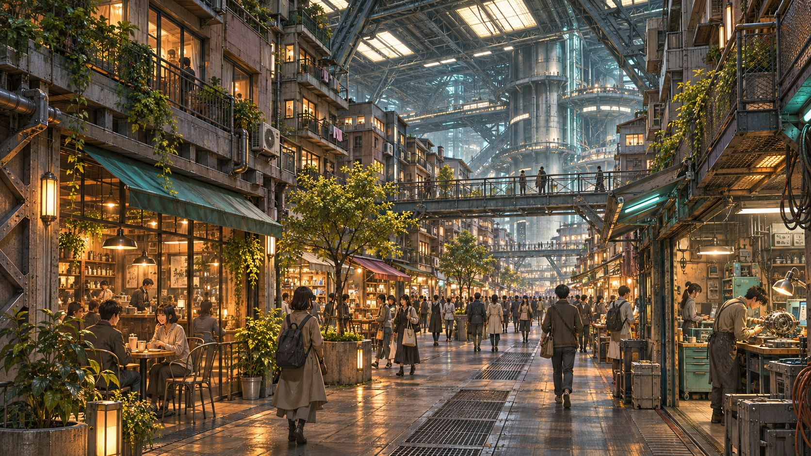
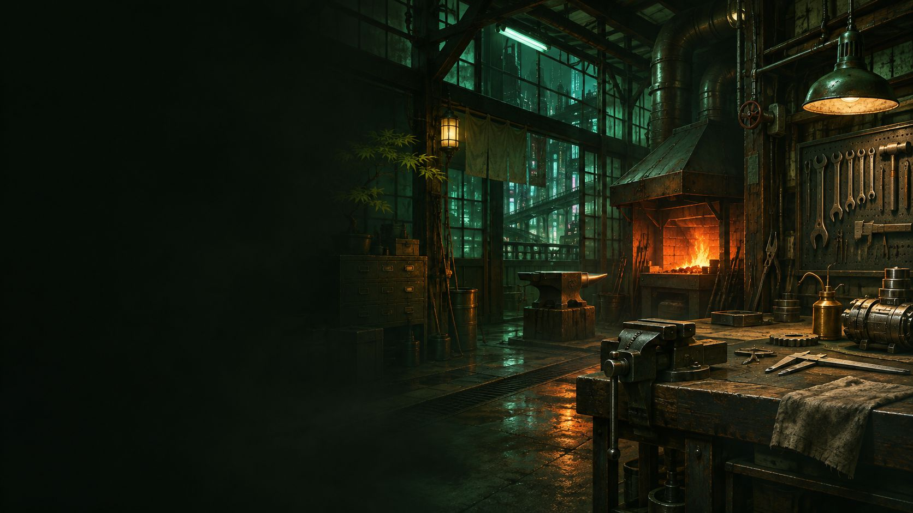

地域・交通・自然
目次へ ↑中層【 ミズガルズ 】
エリアの半分以上が工場地帯であり、アースガルズの下請け的な意味合いが強い。
アースガルズとヘルヘイムを繋ぐエリアである為か、様々な情報が集まるエリアでもある。
天井には人工太陽光のライトが差し、
中心エリアにいるものは実際の太陽を知らない者なども多い。
孤児院でもあるライラックホーム、
能力犯罪に対する自警団バスターライラック、
様々な活動支援や自治に務める管理局スヴァリン、
ユグドラシルの修理組織の中枢である職人協会モーターソグニルなど、市民たちが多く参加している組織が目立つ。
中層ゲート
認証は行われるが、基本的に各層の住民は往来フリーパスである。
ただし下層民は中層に１週間以上の滞在をしている事が確認された時点で捕縛対象となる。
元は「モヒカン特区【ウェイストランド】」とまで揶揄される無法地帯であったが、
【グングニル】はこの地区の解放と再開発、治安維持をハムセルに任命。
その後ハムセルによってモヒカンの掃討作戦が実施され、現在に至る。
（なおハムセルの居住は上層でありこの地区にあるのは別荘）
当然ながらモヒカンの出入りは厳禁。
ランドマークとして5mのハムセルの銅像が立っており、銅像の下部のスイッチを入れるとこの地区を開放した英雄譚（12分）を聞くことができる。
プロパガンダセンターのあるビルには街頭TVがあり、ハムセル自身による街のすばらしさを伝える広告が流れている。
君達を守り、養っているのはこの私だ。両親に愛を！この私にもっともっと愛を！！」
「やぁみんな！知ってるかい？ニュー・ハムセル・デュシャンの外では、内臓が飛び出す可能性が8000%上昇するんだ！
これは科学的に証明された数字だよ。」
「市民の諸君、ニュー・ハムセル・デュシャン地区ではゴミのポイ捨ては重罪だと知っていたかぁ？
ああ、それから、この街の法に対する不平の言葉はゴミだからな。」
路上でのパフォーマンスも盛んに行われており、昼夜を問わず非常に活気のあるエリアである。
ただしウトガルド工業地帯に隣接している都合、モヒカンの出没率も高いので要注意。
森林や、小さな山、湖等、人工島ユグドラシルには滅多に存在しない自然を堪能できる場所であり、誰でも入る事が出来る。
そこにある木々、昆虫等は全て区域内にある研究所にて開発された人工的な物、あるいは能力により発育を促された物であるため、
区域外に影響を及ぼすことはないようにされている
また、昆虫等は本能的に区域外には出れないようにしており、生殖能力もある。
開発のためにあらゆる場所からの援助を受けた結果、誰もがその区域に口出し出来る癖に誰もが責任を取らないとんでもない区域と化している。
現時点では開発中という事もあってか、施設はほぼ存在しない。
そして訪れてから数十分が経過すると、急激な眠気と共に滞在者は意識を失い、元いた場所に還される。
辿り着く条件は不明で、グラスランドを彷徨う内にいつの間にか、というケースが殆どのようだ。
よって、その存在は現状ごくごく小さな「噂」程度にしか知られていない。
大樹は人工的に再現されたもの等ではなく「本物の植物」であり、大きさは数十メートル単位にも及ぶ。
ただし品種は既存のどんなものとも一致しない。
これは肉体的な消耗は勿論、ＰＳＹエネルギーの異常にさえ干渉する。
なお、直接雫を受けずとも落ちた雫は蒸発して霞となりこの空間内を漂うため、ただこの空間に滞在するだけでも効果がある。
この大樹がＰＳＹ生命体として有する意思なのか、それとも別の何かが語り掛けてきているのかは不明である。
組織・企業・治安
目次へ ↑レディースチーム【 蒼龍 - ブルードラゴン - 】
暴力性でいえば男性陣よりも派手であり、
暴走行為、暴力、恐喝、窃盗、強盗、麻薬に至るまで幅広く犯罪に手を染める。
むしろ世紀末覇者による凶悪犯罪は彼女らがメインであると言っても過言ではない。
それに付随する犯罪行為も見つけた場合は粛正という名のリンチに走り、潰す。
そのためウトガルド工場地帯での性犯罪率は極端に少ない。
世紀末覇者内でもそれは変わらず、男性陣とチーム内で対立する事もしばしばである。
子供の誘拐・洗脳を軸に、思想の画一化によって革命を達成しようと目論む。
詳細はエネミー勢力【 オルレアンの噂 】を参照。
代表者【 ヤフヤ 】の解放とノーマル体制の解体を目的にテロを繰り返す。
詳細はエネミー勢力【 能力者解放戦線 】を参照。
規模は小さく組織立った活動もほとんど行わないが、
悪意に見返りを求めないその姿勢ゆえ、ある意味ではルーン企業連やスヴァルトアルフといった大組織以上に厄介。
詳細はエネミー勢力【 クリフォト 】を参照。
その実態は映画と称したスナッフフィルム群。
また、社長ミハヤの技術力や作品傾向の関係で生物兵器の開発のプロフェッショナルでもある。
詳細はエネミー勢力【 パズズ 】を参照。
バラクラヴァ食品
- 所在
- 中層本社・上層エデン地区営業所
中層を本拠地とする健康食品製造会社。
乳酸菌飲料や栄養タブレットなどを販売しており、契約した会社への配送・補充作業も行っている。
その裏ではPMCとして活動しており、一部の社員が情報工作員として派遣されることがある。
本拠とする中層の情報機関であるスヴァリンとは穏やかな協力関係にあるが、
他層の情報機関には警戒されており、
ニーベルングとは情報工作員の不干渉を決めているが、
ヨルムンガンドとは末端同士が出会えば殺し合いに発展することもある。
尤も、ニーベルングとは互いにスパイを送りあって情報戦を繰り広げており、
ヨルムンガンドとは密約を結んでいるので一定のラインを越えることはないのだが。

生産・インフラ
目次へ ↑動力プラント【 ニザヴェリール 】
増設に増設を重ね、パイプラインが複雑に絡み合う巨大な動力施設。
管理権限自体は上層のグングニルが持つ。
ウトガルド工場地帯
天井にも届く建物群はさながら巨人の街の様であり、ユグドラシルの工業品や輸出品を支える。
複雑な工場群は下層のグニパヘリル街に次いで複雑になっており、
様々な企業をはじめ、犯罪集団も潜んでいるエリアとなっている。
中層における犯罪発生件数は増すばかり。モヒカンの巣窟でもあり、チーム世紀末覇者の根城でもある。
生産プラント【 セスルームニル 】
家畜生産を主とする畜産業を担う。クローン豚が一大産業の１つ。
高品質なクローン牛の研究も行っているが、高級肉の産業部分は施設上どうしても上層に遅れをとっている。
ここのでクローン家畜の実験の失敗により、
中層全域には巨大ねずみなどが多く害獣として徘徊するようになった経緯がある。
管理権限はオルレアンにあるが、その運営の多くを民営に委託している。
飲食・娯楽
目次へ ↑BAR【 パープルアイズ 】
店内にはジャズミュージックが流れ、シックな雰囲気のお洒落なＢＡＲである。オカマバーではない。
レジスタンス時代から経営しており、情報屋のたまり場でもある。
ミルヴァ自身は最近スヴァリンの仕事が忙しく、店に顔を出せない事を嘆いているようだ。
マグタフを混ぜたカクテル【 パープルアイ 】が人気。
その実態は、モヒカンたちが空腹を満たすために集う魔境。
営業時間は１０：３０～１８：３０、定休日は毎月の第２・第４土曜。広くはないがイートインのスペースもあり、満席でなければ利用可能。
メニューはアイスクリームとシャーベットが主で、ソフトクリームは扱っていない。
それ故に学生客からの評判は意外と良好だが、店主があまりに無愛想なので社会人からの評判は散々。
コアな固定客は存在するようだが客足が多いとは言えず、何故潰れていないのかは疑問である。
収入源が他にあって、半ば趣味で営業しているのでは、とも。
真偽は不明だが、この店で風代わりな客と出くわしたなら面白い話を聞けるかもしれない。
２７歳 男性 能力タイプ/クリエイター 能力名/クール・アイス
能力者至上主義団体に所属していたクリーチャー使いの狂信者は他人の空似。
別にポリシーがあっての対応ではないので、常連客相手であれば暇な時間に話すこともある。
自分の店を懇意にしてくれる客にはサービスしたりもするので、無感情に接客しているというわけではないらしい。
「今は業務中だ。聞き込みなら他の客にでも聞け……営業の邪魔だ」
あるホテルの中に併設されており、営業時間は０７：００～１６：００。
以降の時間帯は別のレストランと入れ替わりになるので注意。
人気Ｎｏ．１料理は特製デミグラスソースのふわとろオムライス。
予約制だが、メニューにない料理のリクエストも可能。レジ横の手作りお菓子もお持ち帰りにどうぞ。
２５歳 男性 能力タイプ/？？？ 能力名/フラッシュマン
流れる音楽に合わせて踊るも良し、飯を食べるも良し、酒を飲むも良し、知らない人と意気投合するも良し。
店内で喧嘩でも始まろうものなら、いつの間にかステージに上げられて観客が応援や賭け事を始める。そんな店。
年齢不詳 性別不明 能力タイプ/？？？ 能力名/熱・響・導・心 - ヒート・ビート・リード・ハート -
楽しくて盛り上がる事が大好き。つまらなくて盛り下がる事が大嫌い。
そのため、自分の領域であるクラブ内では兎に角盛り上がればOKのスタンスであり、
つまらないものは即座に叩き出す過激な一面も併せ持つ。
基本的には善人だが、最終的な判断基準は楽しいかつまらないかなのでやや危うい。
簡単に言えばめちゃくちゃ盛り上がる。逆に盛り下げる事もできるが面白くないのでそうしない。
暗く沈んだ顔をした相手が５分後にはテンション上げて踊ってるレベル。
教育・訓練・福祉
目次へ ↑ライラックホーム
孤児院としての仕事はもちろん、地域でのボランティア活動などを行っており、
時折びっくりするほどの情報網を持っていたりする。
オルレアンの拠点でありながらちょっと貧乏である。動力プラント【 ニザヴェリール 】に隣接している。
人造人間教育機関【キヴォトス】
- 所在
- 中層
「人造人間」を専門とした、中層の教育機関。
ノーマル主義者の強い反対があったため、上層には作られなかった。
一口に人造人間といっても人格や知識面の成熟度合はそれぞれなため、入学段階で知能・知識・情動面の測定を行い、
初等～大学レベルまでそれぞれのレベルに見合ったクラスに配置、教育が施される。
付近にハイレベルな変態が沸きがちなのが悩みの種。
異能を上手く扱えない者や、護身術を学びたい者たちが集う場所である。
講師の中にはバスターライラックの隊員が割といるが、趣味の範疇であり他意はない。
多分。おそらく。
道場と言うよりは訓練用の建物に近い性質を持っている。
やたらと広く設備が充実しているため、なんか上層から援助されてるような気がしないでもない。
年齢不詳 男性 能力タイプ/？？？ 能力名/???
「中層での事件」の際に右足を骨折しており、それ以来一線を退き、道場での教育に励んでいる。
時々自分の事を「セブン」と名乗る。
その後は諸星健師範に拾われ、運よく生き延びた。行方不明になった兄弟たちを探しているという。
全身の赤いウルトラ族。
人物・ロボット
目次へ ↑モヒカン三連星
３人合わせて「バーバリアンズ」と名乗るが、その能力の関係で「床屋三兄弟」と呼ばれる。
誰が呼んだか、様々なところに出没し、大きすぎない小さい悪事をたくさん行っている。
チーム世紀末覇者が広がっている原因はある意味でこのモヒカン三連星の広報活動が大きいとも言われる。
広報活動をするが故にか、時々慈善活動もするため心理的にも非常に捕まえにくい。
今一度言うが、大きすぎる犯罪には関わらない。
その姿は千差万別とされ、あらゆる情報を知るが物事に直接干渉することはなく、
ただ情報を用いて他者を面白おかしく踊らせるためだけに存在しているという。
直接的な危害を加えてくることは少ないが、その膨大な情報網は全く予想のできない繋がりを生む。
詳細は全層共通キーワード【 エンダー・スミシー 】を参照。
営業時間は１０：００～２１：００。定休日は金・土。
露天商の体裁を取っているため、事情によって公園など別の場所へ移動する可能性アリ。
つまり彼女にスピリチュアルな才能は全くない。
占いは元よりそんなものだと割り切るか、超能力が現実になったご時世ではただの詐欺だと感じるかはあなた次第。
３歳ぐらい 女性（♀） 能力タイプ/サイキッカー 能力名/もうか
汎用ロボット【イッポンダタラ】
- 所在
- 中層を中心に全層
モーターソグニルが指揮する、一つ目一本足の汎用補修ロボット。
服装に関しては金槌に奴床ばさみ、作業着という出で立ちが基本。
ＬＵＮＡ隊の設置以降は稼働率が急増しており、中層において見かける機会が増えた。
ユグドラシル全体の建設・修繕を目的として、モーターソグニル監督の下、各地に設置されている。
同じ汎用ロボットであるクラップトラップと比較すると能力面はかなり優秀。大穴が空いた壁も瞬く間に修繕してしまう。
腕っぷしも立つためモヒカンの数匹に絡まれた程度ではものともせず、飛び跳ねるようにして移動する関係で踏破性も高い。
仕事（≒壁の建設）への意欲も高い……と、業務遂行能力自体は文句のつけようがない逸品として評価を受けている。
……のだが、知能面は逆にクラップトラップを下回っており、モヒカンと五十歩百歩というレベル。
壁の建設に情熱を注いでいる働き者というのは上記の通りだが、これが空回りすると「不要な壁を設置して道を塞ぐ」というインシデントが往々にして起こる。
こうなるとなまじ建設能力が優秀なせいで撤去が非常に面倒。結果としてウトガルドの迷宮化に一役買ってしまっている存在と言える。
おまけに、いちいち大声で吼えるように話すので非常にやかましい。
業務に関しては几帳面で職人気質だが、それ以外の場面では言動も支離滅裂である。
なお、壁の建設を価値判断の基準に置いているためか、建材としての適性で物事を評価することがままある。
「コンニャク」はイッポンダタラたちにとって代表的な罵倒語。
「うぉれの壁ェは世界一ィィィィィィィィィ！！！！」
「軟弱ぅ！脆弱ぅ！コンニャクぅ！」